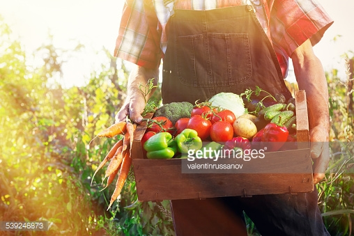

Alimentation"L'homme est probablement consommateur de symboles autant que de nutriments"
Dr Jean Trémolières, 1977

I-Efficacité des ressources
L’alimentation végétale nécessite une surface agricole cinq fois inférieure à celle requise pour l’alimentation moyenne actuelle. L’élevage sollicite 70% de la surface cultivable mondiale et 30% de la surface totale de la terre. 70% de la déforestation de la forêt amazonienne se fait au profit de zones de pâture, et une large part des 30% restants est imputable à la production destinée au fourrage pour animaux (ibid.). La très grande majorité du soja importé en Suisse provient du Brésil, ce qui rend notre pays complice de la déforestation susmentionnée. De même, plus de 80% des aliments pour animaux destinés à l’élevage bio proviennent de l’étranger.
II-Pauvreté dans le monde
La production d’un kilo de viande de bœuf nécessite jusqu’à 13kg de céréales, tandis que la même quantité de viande de porc requiert jusqu’à 5.9kg de céréales. 85% des récoltes mondiales de soja et 35% de la production de céréales sont utilisés pour nourrir les animaux d’élevage. En Suisse, ce taux s’élève même à 80%. Simultanément, 842 millions d’humains sont sous-alimentés, ce qui occasionne 20’000 décès au quotidien. Si l’on affectait les récoltes de céréales à l’alimentation humaine, il serait aujourd’hui possible de nourrir 4 milliards de personnes supplémentaires, ce qui couvrirait largement les besoins alimentaires liés à la croissance de la population mondiale, estimée à 2.4 milliards d’individus.
III-Alimentation durable 2020
Afin d’être promue, il est crucial que la cuisine végétale se voit attribuer une importance accrue au niveau institutionnel et sur le plan social. Une telle approche structurelle est libérale et dirige la société vers une alimentation durable d’une manière ciblée. Grâce à une amélioration de l’offre de denrées alimentaires végétales nous nous alimentons nettement plus souvent de manière durable, sans restrictions de liberté, de plaisir gustatif ou de confort. C’est en ce sens que nous proposons les prises de mesures suivantes:
Formation professionnelle: Dans le cadre actuel de la formation de cuisinière/cuisinier, la quasi-totalité des menus d’examen contiennent de la viande. L’importance accrue de la cuisine végétale (végétarienne et végétalienne) constituera une nouveauté dans la formation de cuisinière/cuisinier. Au moins la moitié des menus d’examen officiels seront végétariens dont un au minimum sera purement végétal (végétalien).
Formation scolaire: A l’heure actuelle, il n’est guère tenu compte de la cuisine végétale dans le cadre de l’enseignement de l’économie familiale. A l’avenir, il sera accordé une valeur beaucoup plus importante à la cuisine végétale (végétarienne et végétalienne) dans l’enseignement scolaire. Au moins la moitié des plats principaux que les élèves apprennent à confectionner seront explicitement végétaux. Chaque trimestre inclura au minimum une entrée, un plat principal ainsi qu’un dessert purement végétal (végétalien).
Formation continue: Les établissements gastronomiques permettant à leurs cuisinières et cuisiniers de se perfectionner dans la cuisine végétale ainsi que les cuisinières et cuisiniers qui se décident à suivre une telle formation de leur propre chef bénéficieront d’un soutien financier. S’il s’agit d’une entreprise formatrice ou d’un(e) maître(sse) d’apprentissage, ce soutien sera d’autant plus important.
Copyright © 2015 expoDubai2020.fr
Mentions légales****